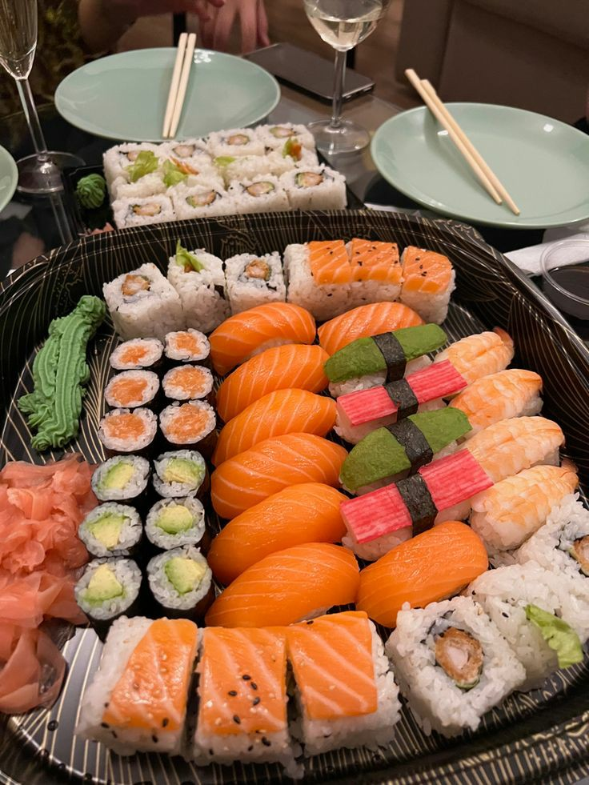
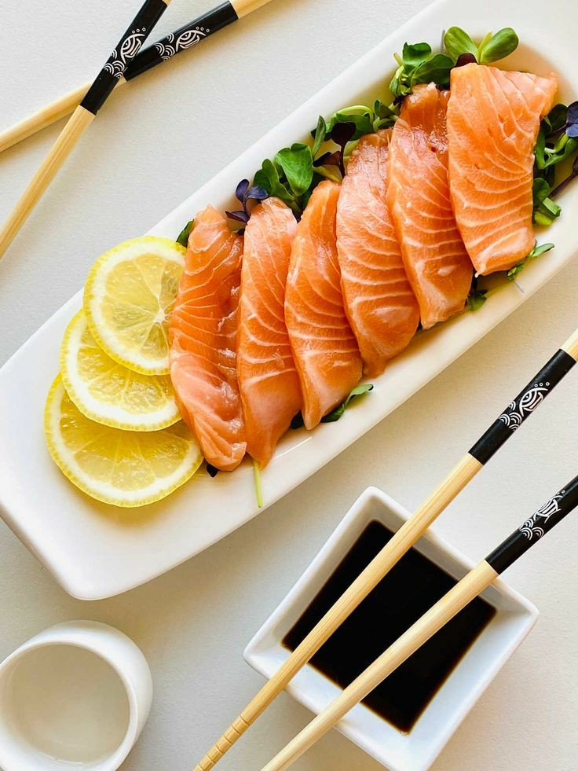
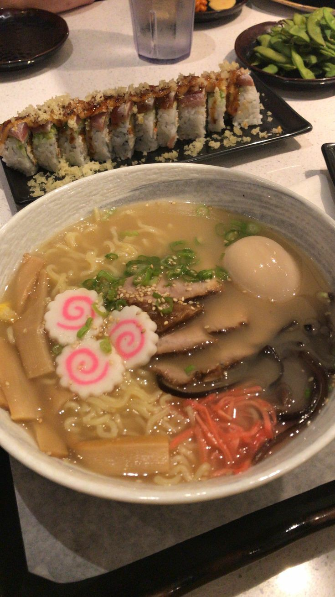
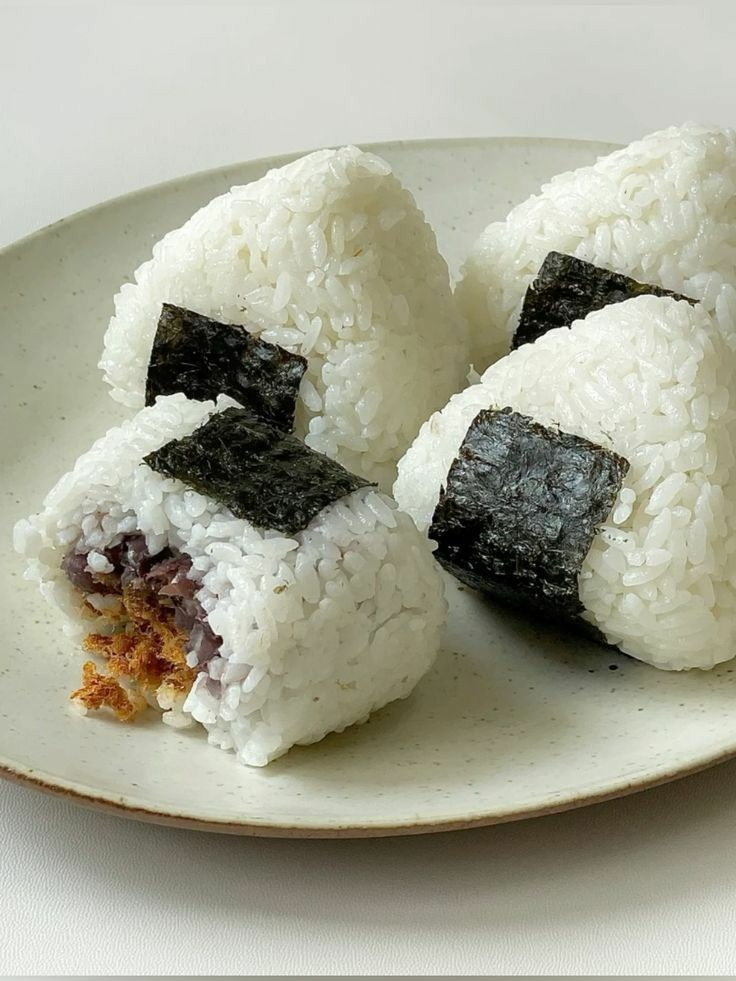
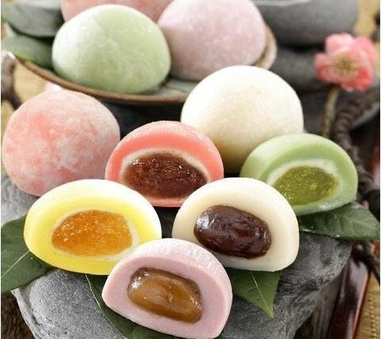

ーーー FOOD ーーー
1. SUSHI
Sushi merujuk pada hidangan khas jepang yang terdiri atas dua bagian, yaitu nasi (shari) dan makanan yang diletakkan di atas nasi tersebut (neta). Nasi yang digunakan untuk shari pada umumnya menggunakan nasi jepang yang dicampurkan dengan gula, dan cuka, sehingga terasa sedikit manis dan asam. Beberapa jenis sushi juga dilengkapi dengan sayuran yang sudah diasinkan, telur, dan lainnya. Yang membuat sushi terkenal dan mudah diterima adalah keunikannya, sushi berhasil menggabungkan nasi, sayur, dan lauk pauk dengan cara yang praktis, dalam satu suapan kita sudah bisa mendapatkan hidangan yang lezat dan bergizi.
2. SASHIMI
Sashimi adalah makanan jepang berupa makanan laut dengan kesegaran prima yang langsung dimakan dalam keadaan mentah bersama penyedap seperti kecap asin, parutan jahe, dan wasabi. Hidangan ini sering dianggap sama dengan sushi, akan tetapi keduanya jelas berbeda. Sashimi dihidangkan dengan bentuk potongan khusus, seperti irisan datar, setrip tipis, diagonal, dan memanjang. Sashimi terbuat dari hewan laut dan banyak jenisnya, sashimi merupakan irisan tipis dari daging ikan mentah, terutama salmon dan tuna.
3. RAMEN
Ramen adalah makanan yang terbuat dari tepung terigu, minyak nabati, dan rempah-rempah. Jenis rempahnya, yakni lada hitam atau putih, biji wijen, togarashi, yuzu kosho, minyak bawang putih, dan kaldu ayam. Dalam satu porsi ramen memiliki beberapa nutrisi. Ramen adalah salah satu olahan makanan khas negara jepang yang terbuat dari bahan dasar berupa mie yang berkuah. Ciri khas dari ramen adalah bentuk mienya yang tipis dan juga berwana kuning. Mie ramen merupakan sajian khas jepang yang disajikan dengan komposisi daging atau ayam, kaldu khusus, dan biasanya ditambahkan dengan miso, soy sauce, serta bahan lainnya.
4. ONIGIRI
Onigiri adalah nama jepang untuk makanan berupa nasi yang dipadatkan sewaktu masih hangat sehingga berbentuk segitiga, bulat, atau seperti karung beras. Onigiri, camilan populer jepang yang terdiri dari nasi berbentuk bola atau kerucut, sering kali diberi isian dan dibungkus dengan nori (rumput laut). Onigiri mengambil namanya dari kata jepang nigiru , yang berarti “memegang” atau “meremas”, disebut demikian karena ditekan dengan tangan menjadi sebuah bola. Makanan ini memiliki bentuk unik yang menyerupai hati. Makanan ini kerap menjadi makanan yang tidak boleh dilewatkan untuk bekal sekolah, piknik, hingga bekerja.
5. MOCHI
Mochi merupakan makanan yang berasal dari jepang, mochi adalah kue yang terbuat dari beras ketan yang memiliki tekstur lembut dan lengket dan berbentuk bulat-bulat kecil. Mochi adalah salah satu wagashi atau dessert khas jepang. Kudapan ini mulanya terbuat dari tepung ketan dan berisi kacang merah. Namun kini isian mochi semakin beragam, mulai dari es krim hingga pasta buah. Dahulu para petani mengonsumsi mochi sebagai makanan yang mampu meningkatkan stamina dan menghangatkan tubuh pada musim dingin. Mochi mengandung cukup banyak kalori serta bebas gluten dan kolesterol, sehingga aman dikonsumsi oleh banyak orang.